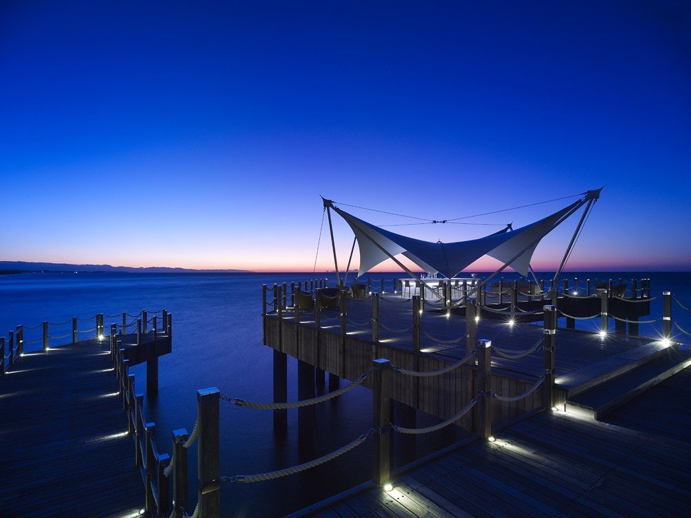

Restaurant & Bars
Bowling
Here you can enjoy bowling with friends or family members at our sleek set of modern ten-pin bowling alleys.
Wine Cellar
Our hand selected wine cellar offers 8,500 of the most exquisite portfolio wines from around the world.This unique Cellar is a perfect setting for private tastings or receptions by invitation.
Vitamin Bar
The vitamin Bar offers a unique retreat within our spa area.Choose the mood of your stay with energy boosting smoothies, rejuvinating juices or icy, revitalizing granites.
Theatro Bar
In the basement of the Amphitheatre, Theatro offers a drink to match the unique, star studded and impressive shows brought to you from around the globe.
Beach Restaurant
The Beach Restaurant is located directly on the white sands of Mardan Palace beach.
Tent Bar
The coolly elegant Tent Bar is a world within in a world. Romantic. Sophisticated. Serene.
Onyx Bar
Indulge your sweet senses with our wide selection of drinks whilst enjoying the views of shore line in the distance.

Scorpion Lounge
Suspended at the end of our Scorpion Deck, 4 metres over the Mediterranean Sea,this Oasis offers cool retreat during the day,and a perfect setting for evening cocktails, accompanied by the sound of waves lapping under your feet.
Monkey Club
Feel the pulse of our private nightclub with a rhythm set by international Djs, and enjoy an array of specially prepared cocktails.
Bosphorous Restaurant
The beautifully appointed open kitchen restaurant is located in the heart of the Hotel, on the ground floor of the Dolmabahce Palace.
Arbat Restaurant
Echoing both the elegant epoch of India's past, and the dynamic rise of the new-this restaurant offers excellant Indian cuisine coupled with our signature vodka and finest caviar selection.
Baan Thai Restoran
The piquant flavours of Thailand are prepared into traditional dishes and served in authentic fashion within our beautiful golden palace.
Oishii Restaurant
Enjoy authentic japanese cuisine in our contemporary restaurant within the Maiden Tower, whilst enjoying our Grand Master Chef at our Teppanyaki table.